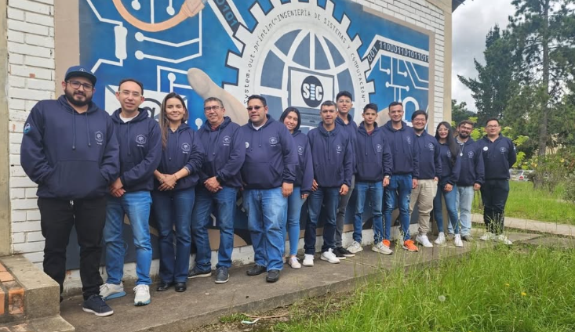

GALASH-IS · refresh visual · paso 2
Direcciones de acento sobre navy
Opción A: Jonquil #F7C500 es el acento único y reemplaza #F5C518. El navy #0A1420 sigue siendo la base. Fuente de verdad: minimal-system; esta página es solo para comparar y no modifica src/.
1. Foco
Ningún color claro llega a 3:1 contra Jonquil: el blanco da 1.62:1 y el azul claro 1.14:1. Por eso el foco es un anillo doble: outline claro de 2px con un halo navy de 2px. Navy contra Jonquil da 11.41:1 y el anillo contra navy, 18.5:1 o 9.98:1.
Recomendada
A1 · Foco blanco
El foco blanco no se parece a ningún otro rol. El azul claro queda solo para enlaces, como define DESIGN.galash.md en modo oscuro. La pestaña activa usa Jonquil (estado activo).
Alternativa
A2 · Foco azul claro + secundario
La convocatoria cierra el 15 de noviembre.
Riesgo: un enlace enfocado tiene el mismo color que su anillo, y las pestañas activas en azul compiten con Jonquil por el rol "activo".
Reglas del azul claro #B4BEDA
- A1 y A2: enlaces de texto, siempre subrayados. Contraste 9.98:1 sobre navy y 8.65:1 sobre superficie.
- Solo en A2: anillo de foco, borde de avisos informativos y pestaña o filtro activo dentro de un grupo.
- Nunca: rellenar botones, marcar éxito o pendiente, ni ir sobre Jonquil (1.14:1). Ningún elemento puede usar Jonquil y azul claro a la vez.
- Jonquil: una acción primaria por vista, el estado seleccionado más importante y, como mucho, una palabra destacada. No se usa para bordes ni decoración.
2. Texto sobre Jonquil
Se usa navy, como pediste. Supera 4.5:1 con margen. DESIGN.galash.md indica Eerie black; usar navy es una desviación pequeña y conviene registrarla.
3. Pendiente vs error vs éxito
Cada estado se distingue por forma del borde + ícono + texto. Activa la escala de grises: pendiente usa borde punteado y reloj; error, borde sólido y signo de exclamación.
Pendiente y error
Pendiente es neutro: texto blanco y borde #8FA1AD punteado (6.94:1). Deja de usar amarillo. Error mantiene #FF8F8A (8.42:1).
Éxito: tres opciones
- S1 (recomendada): relleno Celadon
#A5E6BAcon texto navy (12.9:1). Es el éxito oficial de la marca. Al ser relleno sólido, no se confunde con el acento menta anterior, que era trazo y borde. - S2 (sin verde): chip neutro con check; solo el ícono comunica el estado. Es el más sobrio, pero se distingue menos al escanear tablas.
- S3: contorno verde
#86E0A6(11.67:1 sobre navy). Visualmente es casi la menta anterior, así que no lo recomiendo.
4. Jonquil sobre fondo.png
La foto tiene pasto oliva (#738A32, cerca del 7% de los píxeles) abajo a la derecha. El pie de imagen va sobre un degradado navy, así que Jonquil no se mezcla con el pasto.

Semilleros de investigación en la UPTC
5. Contraste calculado
Se calcula en esta página con la fórmula WCAG 2.x. Objetivos: texto ≥ 4.5:1 y UI o foco ≥ 3:1.
| Par | Uso | Ratio | Mínimo |
|---|
Mapeo de roles (para el paso 3)
| Rol | Antes | Después (A1 + S1) |
|---|---|---|
| CTA principal | menta / amarillo mezclados | --accent Jonquil + --accent-fg navy |
| Enlace | menta | --link #B4BEDA, subrayado |
| Foco | amarillo (20) y menta (1) | --focus blanco + halo navy |
| Hover / borde | menta rgba .12–.35 | --border / --border-strong (blanco 12% / 28%) |
| Seleccionado / activo | menta | Jonquil (uno por grupo) + indicador de forma |
| Éxito | menta | --success-bg Celadon + check + texto |
| Pendiente | amarillo | neutro con borde punteado + reloj + texto |
| Error | #FF8F8A | --danger #FF8F8A + triángulo + texto |
| Texto destacado / eyebrow | menta | --text-muted + mono 12px mayúsculas (tabla, app y pie de foto); nunca Jonquil |
| Gráfico (d3, canvas, shader) | menta / turquesa | Glaucous #7785AC, con Jonquil para el nodo activo |